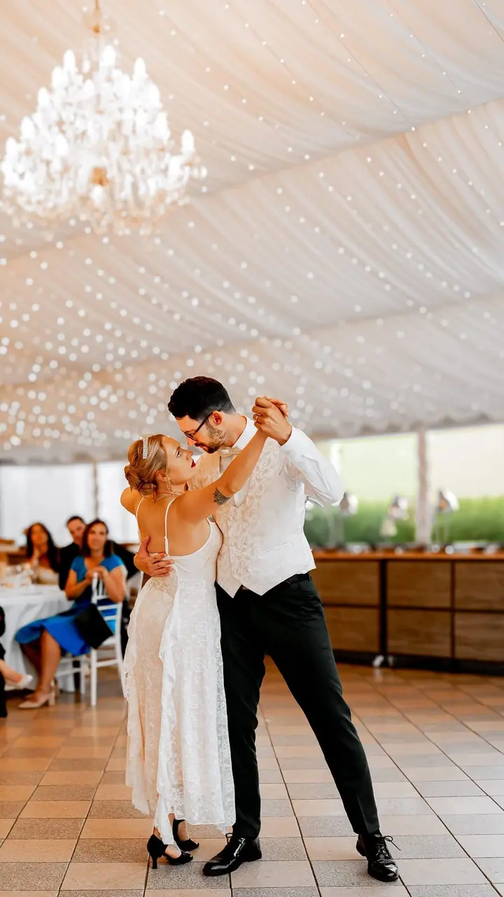
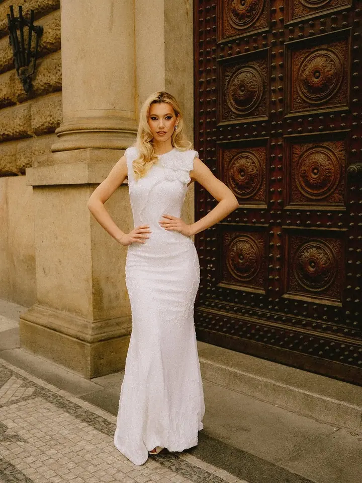
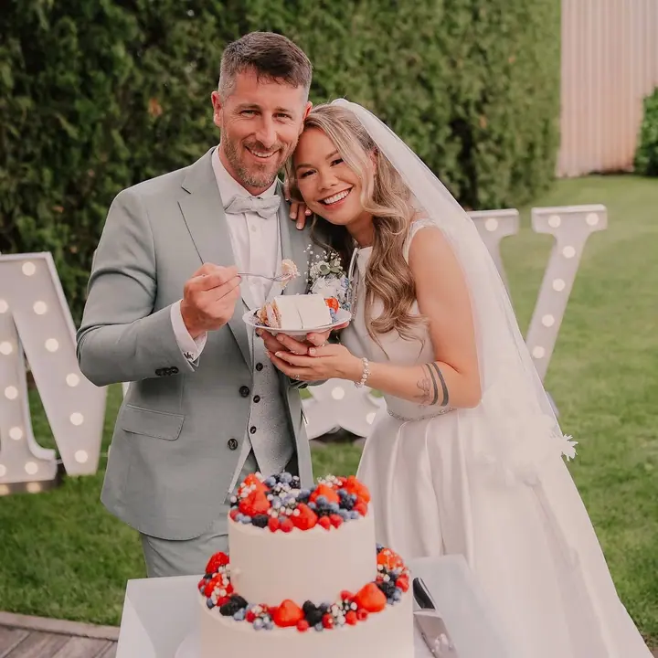

jedna
Svatby
Fotit svatby pro mě znamená být součástí vašeho příběhu. Podle balíčku vás fotím od obřadu až po přípravy, první tanec a prskavky.

Svatební a portrétní fotograf · Praha, Chomutov

Jmenuji se Ladislav Rostaš, ale klidně mi říkejte Láďo. Fotím svatby a portréty v Praze i v Chomutově a rád za vámi přijedu kamkoliv. Na fotkách mají být smějící se lidé, pozitivní energie a silné emoce.
Více o mně
Co fotím
jedna
Fotit svatby pro mě znamená být součástí vašeho příběhu. Podle balíčku vás fotím od obřadu až po přípravy, první tanec a prskavky.
dvě
Venkovní focení v délce 60 až 120 minut s konzultací a pomocí se stylingem. Fotky si sami vyberete z náhledové galerie.
tři
Uvolněné focení pro rodiny, páry i budoucí rodiče. Hlavně hodně smíchu a pozitivní energie.
Focení podle domluvy a programu akce. Počet fotek se odvíjí od délky akce a počtu lidí.
Smějící se lidé a silné emoce
Za objektivem
Ahoj, je mi 26 let a plním si své sny. Pomáhají mi v tom dvě věci, které miluji: lidské příběhy a fotografie. Sám za sebou jeden silný příběh mám a focení mě v něm provází už od roku 2012.
Specializuji se na svatby a portréty. Fotit svatbu pro mě znamená být součástí vašeho příběhu, od obřadu přes skupinky až po první tanec. Pozitivní energie, smích a silné emoce jsou kořením mé práce i rukopisem výsledných fotografií.
Věnuji se i kreativním projektům a nové výzvy a zajímavé spolupráce vždycky beru s radostí. Žiji v Praze, často jsem i v Chomutově, ale rád za vámi přijedu kamkoliv.
Ladislav
Napište mi datum a místo svatby. Termíny teď rezervuji na roky 2027 a 2028.
Vyberete si balíček Blue, Red nebo White a případné služby navíc. Jednoduchou svatební smlouvu podepíšeme online.
Přijedu za vámi a fotím podle zvoleného balíčku, od příprav přes obřad a skupinky až po tanec a prskavky.
Upravené fotky dostanete do 30 dnů ve vlastní online galerii.
Portfolio
Otázky
Balíček Blue na 2 hodiny stojí 9 500 Kč, Red na 8 hodin 16 500 Kč a White na 12 hodin 22 000 Kč. Hodina focení navíc je za 1 200 Kč, doprava se počítá zvlášť.
Do 30 dnů ve vlastní online galerii. Podle balíčku jich bude 60 až 380.
Domluvit se dá dron na foto i video, fotokoutek nebo 360 videokoutek. Předsvatební focení máte se slevou 20 %.
Focení venku trvá 60 až 120 minut a stojí 4 000 až 6 000 Kč. Z náhledové galerie si vyberete 15 fotek, které vám upravím do 20 dnů od výběru. Každá fotka navíc je za 150 Kč.
Napište pár vět o tom, co si představujete. fotograf@ladislavrostas.cz